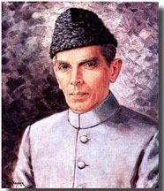
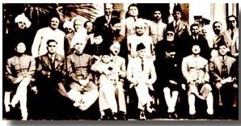

Every person in this world has a hero. People have heroes because they really admire that person and they really look up to that person. They want to do what they have done and they have achieved in their life. Like every person, I also have a hero. My hero had a great personality and a great heart. His name is Quaid-e-Azam Mohammad Ali Jinnah.
I choose him as my hero because I really admire him. I admire his style, his personality and what he did for the Muslims of our country. He gave Muslims their freedom from the British Empire that was ruling at that time.
Quaid-e-Azam Mohammad Ali Jinnah was born on Dec. 25th, 1876, to a prominent mercantile family in Karachi. He was educated at the Sindh Madrassat-ul-Islam and the Christian Mission School. Jinnah joined the Lincoln's Inn in 1893 to become the youngest Indian to be called to the Bar. Three years later, he became Bombay's most famous lawyer. He formally entered politics in 1905 from the platform of the Indian National Congress. He went to England in that year as a member of a congress delegation to plead the cause of Indian self-governemnt during the British elections